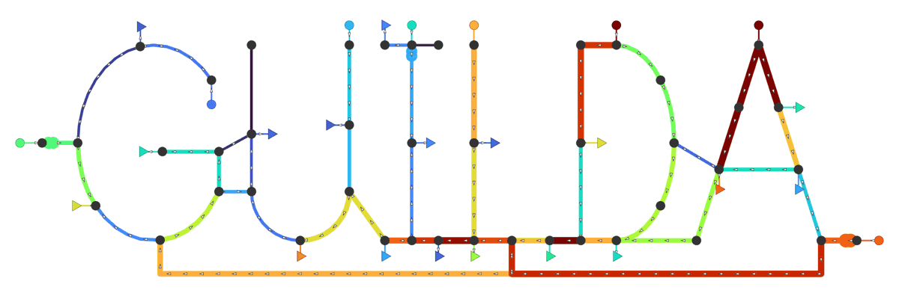

GUILDA DocumentationGUILDA ドキュメント
Grid & Utility Infrastructure Linkage Dynamics Analyzer
A MATLAB power-system simulator for students and researchers in systems and control. Combine blocks into models, then analyse and share them.
システム制御を学ぶ学生や研究者に向けた、MATLAB で動く電力系統シミュレータです。部品を組み合わせてモデルを作り、解析したり共有したりできます。

Try it in a few lines数行で試す
After starting GUILDA, load a bundled network, add a fault to a scenario and simulate it. The same network object also gives the linear model.
GUILDA を起動したら、同梱の系統モデルを読み込み、シナリオに事故を加えてシミュレーションします。同じネットワークのオブジェクトから、線形モデルも得られます。
See the basic workflow基本的な流れを見るnet = network.IEEE14bus;
sc = net.add_scenario("fault", Time=[0, 10]);
sc.add_fault("B008", [1, 1.05]);
res = net.simulate("fault"); % time response
res.plot_trajectory(Quantity="omega");
sys = net.get_sys(); % linearized modelSupported Analyses対応する解析
-
RMS phasor models実効値フェーザモデル
Three-phase balanced networks in the RMS phasor representation: voltages and currents are complex phasors of their RMS values at the fundamental frequency, the network is a set of algebraic equations, and the dynamics are those of the generators, loads and controllers.
三相平衡の電力系統を、実効値（RMS）のフェーザで表します。電圧と電流は基本周波数の複素フェーザとして扱い、送電網は代数方程式で表します。動的な振る舞いは、発電機、負荷、制御器のモデルが受け持ちます。
Load a standard model, such as the IEEE 9-, 14-, 39- and 68-bus test systems or the IEEJ EAST10, EAST30, WEST10 and WEST30 standard models, or build a network of your own configuration from buses, branches and components.
IEEE 9 母線系統、14 母線系統、39 母線系統、68 母線系統や、電気学会の EAST10/EAST30/WEST10/WEST30 系統モデルを、すぐに読み込めます。母線、ブランチ、機器を自分で組み合わせて、独自の構成の系統を作ることもできます。
-
Time-domain simulation時間応答シミュレーション
Responses to faults, load and input changes, and initial-value perturbations.地絡や負荷・入力の変化、初期値の摂動に対して、系統がどう応答するかを計算します。
-
Linear analysis線形解析
Linearize the network around an operating point into Eẋ = Ax + Bu, y = Cx + Du, and analyse small-signal stability from its eigenvalues. The matrices A, B, C, D and E come with the names of the states, inputs and outputs, so they can be used for further linear analyses such as kernel analysis.
動作点のまわりで系統を近似線形化し、Eẋ = Ax + Bu、y = Cx + Du の形のモデルを得ます。固有値を調べれば、定態安定性を評価できます。行列 A、B、C、D、E には状態・入力・出力の変数名が付いているので、カーネル解析など、ほかの線形解析にもそのまま使えます。
-
Continuation power flow連続潮流計算
Raise the loads of chosen buses step by step and trace the power-flow solution to draw the nose (PV) curve, then find the maximum loading point to assess voltage stability.
連続潮流計算で PV カーブ（ノーズカーブ）を描けます。選んだ母線の負荷を少しずつ増やしながら潮流解をたどるので、最大負荷点がわかり、電圧安定性の評価に使えます。
-
Optimal power flow最適潮流計算
General formulations of OPF problems on the same network.同じ系統モデルを使って、一般的な形で定式化した最適潮流計算問題を解けます。
-
Controller design from scriptsスクリプトによる制御器設計
Design controllers in MATLAB scripts, for example an LQR gain from the linear model, attach them as local or global controllers, then simulate or linearize the network to evaluate them.
制御器は MATLAB のスクリプトで設計できます。たとえば線形モデルから LQR のゲインを求め、ローカル制御器やグローバル制御器として系統に取り付けます。そのうえでシミュレーションや近似線形化を行い、効果を確かめます。
-
Graph & animationグラフとアニメーション
Network graphs whose node heights and colours follow the response.応答に合わせてノードの高さと色が変わる、系統のグラフを描けます。
Licenseライセンス
GUILDA is released under the MIT License. Details: the LICENSE file at the repository root.
GUILDA は MIT ライセンスで公開しています。詳細はリポジトリのルートにある LICENSE ファイルを参照してください。
Developers開発者
GUILDA is developed by the Ishizaki Laboratory, Institute of Science Tokyo. It continues power_simulator, developed by Takahiro Kawaguchi (Gunma University).
東京科学大学 石崎研究室が開発しています。前身は川口貴弘先生（群馬大学）が開発した power_simulator で、GUILDA はこれを引き継いでいます。
Books and articles書籍・記事
- T. Ishizaki, T. Kawaguchi and K. Kawabe,石崎孝幸・川口貴弘・河辺賢一 著、 「電力系統のシステム制御工学 – システム数理と MATLAB シミュレーション –」, Corona Publishing (in Japanese). The textbook explains power systems in the language of systems and control and uses GUILDA for its numerical examples.、コロナ社。 電力系統をシステム制御の言葉で解説した教科書です。数値例の計算に GUILDA を使っています。
- T. Nishino, T. Kawaguchi and T. Ishizaki, 「GUILDA：エネルギーナレッジマネジメントのはじめの一歩」, 計測と制御, Vol. 62, No. 9, pp. 559–563, 2023 (in Japanese).
- Introductory article紹介記事, 計測と制御, Vol. 62, No. 10 (in Japanese, PDF).
How to cite引用方法
To cite GUILDA in published work, give the GitHub repository with the version or commit you used and the date you accessed it, for example:
GUILDA を用いた成果を発表するときは、GitHub リポジトリを、使用したバージョンまたはコミットとアクセスした日付を添えて引用してください。たとえば次のように記載します。
GUILDA: Grid & Utility Infrastructure Linkage Dynamics Analyzer, https://github.com/guilda-dev/guilda (version/commit, accessed YYYY-MM-DD).About GUILDAGUILDA について
GUILDA (Grid & Utility Infrastructure Linkage Dynamics Analyzer) is a power-system simulator for MATLAB, made for students and researchers in systems and control. It is developed with the textbook 「電力系統のシステム制御工学」 (Systems Control Engineering of Power Systems, Corona Publishing, 2022), whose numerical examples are computed with GUILDA.
GUILDA（Grid & Utility Infrastructure Linkage Dynamics Analyzer）は、システム制御を学ぶ学生や研究者のための、MATLAB で動く電力系統シミュレータです。教科書「電力系統のシステム制御工学」（コロナ社、2022 年）と一緒に開発しており、教科書の数値例は GUILDA で計算しています。
The whole grid is a set of differential-algebraic equations with named states and inputs, so control methods apply to it directly.
系統全体を、状態と入力に名前の付いた微分代数方程式として扱うので、制御の手法をそのまま使えます。
Background開発の背景
Wind and solar plants, homes with rooftop PV, batteries and microgrids now connect to the grid, and many of them are controllable. Keeping the supply stable with them is a control problem. Power engineering and control engineering, however, expect different things from a simulator.
風力・太陽光発電所、太陽光パネル付きの住宅、蓄電池、マイクログリッドが系統につながり、その多くは制御できます。こうした系統で電力を安定に届けることは制御の問題です。ただし、電力工学と制御工学ではシミュレータに求めるものが違います。
Power-system and power-electronics tools電力系統・パワーエレクトロニクスの解析ツール
- Detailed models
- Fast computation
- Faithful reproduction of real events
- One module per device
- 精緻なモデル
- 高速な計算
- 現実の事象の忠実な再現
- 設備ごとのモジュール
Control engineering制御工学
- Models with only the essential dynamics
- Principles derived from the mathematical model
- 本質的な動特性だけを残したモデル
- 数理モデルから導く原理原則
A control researcher who turns to power systems therefore first spends a long time learning the power domain.
そのため、制御の研究者が電力系統に取り組むと、まず電力分野の知識の習得に時間がかかります。
Work that GUILDA takes overGUILDA が引き受ける作業
Simulating a grid from scratch一から実装する場合
- Write the model of each device as code.
- Connect the devices and derive the admittance matrix.
- Write the equations of the whole system.
- Find the operating point of each device.
- 各設備のモデルをコードにします。
- 機器を接続し、アドミタンス行列を導きます。
- 系統全体の方程式を書きます。
- 各機器の動作点を求めます。
With GUILDAGUILDA を使う場合
Add buses, branches and components to a network object. GUILDA derives the admittance matrix, the equations of the whole system and the operating point.
母線、ブランチ、機器をネットワークのオブジェクトに追加します。アドミタンス行列、系統全体の方程式、動作点は GUILDA が求めます。
Main features主な特長
A linear model taken apart by element要素ごとに分解できる線形モデル
Many tools output state matrices for eigenvalue analysis. In GUILDA the states, inputs and outputs of the linear model have names, and the model can be taken apart:
固有値解析用の状態空間行列を出力するツールは多くあります。GUILDA の線形モデルは状態・入力・出力に名前が付いており、次のように分解できます。
- into the parts of each generator, controller, branch and bus;
- into the kernel of the Jacobian, the uniform rotation of all phases, one for each island;
- into a reduced model without the variables of chosen elements (Schur complement), such as the grid seen from its buses.
- 発電機、制御器、ブランチ、母線ごとの寄与の和に分けられます。
- ヤコビ行列の核（すべての位相が一様に回転する方向）を、アイランドごとに求められます。
- 指定した機器の変数をシューア補元で消去できます。たとえば母線だけから見た系統の行列です。
Controllers in the same network制御器もネットワークの一部
Local controllers such as AVRs, PSSs and governors are added to a component, and global controllers such as AGC to the network. Each controller is a class, and time simulation and linearization include it.
AVR、PSS、ガバナなどのローカル制御器は機器に、AGC などのグローバル制御器はネットワークに追加します。制御器はクラスとして実装され、時間応答シミュレーションにも近似線形化にも含まれます。
One model from optimization to stability最適化と安定性を一つのモデルで
One network runs power flow, time simulation, linearization, continuation power flow and optimal power flow, and each returns a result object.
一つのネットワークで潮流計算、時間応答シミュレーション、近似線形化、連続潮流計算、最適潮流計算を実行でき、それぞれ結果のオブジェクトを返します。
- The solution of the AC optimal power flow can be the operating point; time simulation and linearization start from it with no data conversion.
- The optimal power flow can include small-signal stability limits of the same network, such as a lowest damping ratio or a largest real part of the eigenvalues.
- AC 最適潮流計算の解を動作点にでき、時間応答シミュレーションや近似線形化はデータを変換せずにその点から始められます。
- 最適潮流計算に、同じネットワークの小信号安定度の制約（減衰比の下限、固有値の実部の上限など）を加えられます。
Building a modelモデルの構成
Buses, branches, generators, loads and controllers are classes. Adding these objects to a PowerNetwork builds the model, which then runs the analyses.
母線、ブランチ、発電機、負荷、制御器はそれぞれクラスです。これらのオブジェクトを PowerNetwork に追加してモデルを作り、そのまま解析します。
% Build a two-bus network
net = PowerNetwork("TestSystem");
net.add_bus();
net.add_bus();
net.add_branch("pi", [1, 2]);
net.a_Bus{1}.add_component("gen-park");
net.a_Bus{2}.add_component("load-power");
net.a_Bus{1}.l_isSlack = true;
% Use the bundled IEEE 14-bus network
net = network.IEEE14bus;
sc = net.add_scenario("fault", Time=[0, 10]);
sc.add_fault("B008", [1, 1.05]);
res = net.simulate("fault"); % time response
sys = net.get_sys(); % linearized modelVisualization built into the analyses解析結果を伝える可視化機能
Every analysis comes with its own figures, and they are made with care. The plot_* methods return GraphBase objects, not bare MATLAB figures: you can restyle them afterwards with set_style, play figures with several time samples back as animations, link figures so that they move together, and explore them interactively. The examples below are the output of the commands shown under each one.
どの解析にも、結果を伝えるための図が用意されており、その図も丁寧に作り込んでいます。plot_* メソッドは MATLAB の図をそのまま返すのではなく、GraphBase のオブジェクトを返します。あとから set_style で見た目を変えられ、複数の時刻を持つ図はアニメーションとして再生でき、図どうしをつないで一緒に動かし、対話的に調べられます。下の例は、それぞれの下に示したコマンドの出力です。
Other figures include the network diagram in 3D, PV curves of the continuation power flow, and the dispatch and locational marginal prices of the optimal power flow.
ほかに、3D のネットワーク図、連続潮流計算の PV 曲線、最適潮流計算の出力配分と地点別限界価格も描けます。
Sharing research knowledge研究の知識の共有
Research know-how tends to stay with one person and is lost when that person leaves. GUILDA aims to turn it into programs, explicit knowledge that others can reuse and build on.
研究のノウハウは個人にとどまりやすく、その人が離れると失われがちです。GUILDA は、こうした暗黙知をプログラムという形式知にして共有し、ほかの人がその上に研究を積み重ねられるようにすることを目指しています。
The idea follows the SECI model of Ikujiro Nonaka, in which tacit and explicit knowledge convert into each other in four steps.
この考え方は野中郁次郎の SECI モデルに基づきます。SECI モデルでは、暗黙知と形式知が四つの段階で互いに変換されます。
- Socialization: members share experience and progress in meetings.
- Externalization: what they learned is written as models and analyses with clear interfaces.
- Combination: these are combined on the platform into new analyses.
- Internalization: researchers use the platform in their own work and gain new insight.
- 共同化：ミーティングで経験や進み具合を共有します。
- 表出化：学んだことを、インタフェースの明確なモデルや解析として書きます。
- 連結化：それらをプラットフォーム上で組み合わせ、新しい解析を作ります。
- 内面化：プラットフォームを自分の研究に使い、新しい知見を得ます。
Each turn of the cycle is meant to leave reusable models and analyses, so that the knowledge does not depend on particular people. The name GUILDA comes from guild: researchers and engineers who learn from one another and build things together.
サイクルを回すたびに再利用できるモデルや解析が残り、知識が個人に依存しなくなることを目指しています。GUILDA の名前は、学び合いながら一緒にものを作る研究者や技術者の集まりをギルドになぞらえたものです。
Comparison with other tools他のツールとの比較
| Analysis解析の種類 | Typical analysis package一般的な解析パッケージ | GUILDA |
|---|---|---|
| Power flow潮流計算 | ✓ | ✓ |
| Small-signal stability via linearization近似線形化による小信号安定度 | ✓ | ✓ |
| Time-domain (transient) response時間応答（過渡応答） | ✓ | ✓ |
| Interfaces for control engineering制御工学向けのインタフェース | Limited限定的 | Core focus中心的な目標 |
Getting Startedはじめに
Install GUILDAGUILDA のインストール
Clone or download the repository from GitHub, or open it directly in MATLAB Online.
GitHub からリポジトリをクローンするか、ダウンロードしてください。MATLAB Online で直接開くこともできます。

Requirements動作環境
GUILDA runs on MATLAB alone; each toolbox is needed only by the features marked below.
GUILDA は MATLAB だけで動きます。Toolbox が必要になるのは、下の表で印の付いた機能を使うときだけです。
| Feature機能 | MATLABR2025a or laterR2025a 以降 | Optimization Toolbox | Control System Toolbox | Symbolic Math Toolbox |
|---|---|---|---|---|
Power flow潮流計算Steady-state voltages and power flows定常状態の電圧・電力潮流net. | ||||
Newton-Raphson method (default)ニュートン・ラフソン法（既定）Solver="newton" | ✓ | – | – | – |
Gradient method勾配法Solver="gradient" | ✓ | – | – | – |
Levenberg-Marquardt methodレーベンバーグ・マーカート法Solver= | ✓ | – | – | – |
Virtual bus dynamics (time integration)仮想母線ダイナミクス（時間積分）Solver="dynamic" | ✓ | – | – | – |
MATLAB fsolveMATLAB の fsolveSolver="fsolve" | ✓ | ✓ | – | – |
Continuation power flow (CPF)連続潮流計算（CPF）Voltage stability: the nose (PV) curve電圧安定性・PV 曲線net. | ✓ | – | – | – |
Optimal power flow (OPF)最適潮流計算（OPF）Generation dispatch that minimizes cost under constraints制約下でコスト最小の発電配分net., net.initialize( | ✓ | ✓ | – | – |
Time simulation時間応答シミュレーションResponse to faults and disturbances事故・外乱に対する時間応答net.simulate | ✓ | – | – | – |
Linearization近似線形化Linear model around an operating point (eigenvalues, controller design)動作点まわりの線形モデル（固有値解析・制御器設計）net., ResultLIN. | ||||
Result object with system matrices (default)システム行列を持つ結果オブジェクト（既定）Format="GUILDAorigin" | ✓ | – | – | – |
Plain MATLAB struct of matrices行列の構造体Format="struct" | ✓ | – | – | – |
Control System Toolbox state-space model (ss)Control System Toolbox の状態空間モデル（ss）Format="ss" | ✓ | – | ✓ | – |
| Controllers制御器Controllers bundled with GUILDAGUILDA 同梱の制御器 | ||||
LQR (optimal state-feedback) controllersLQR（最適状態フィードバック）制御器controller., controller. | ✓ | – | ✓ | – |
| Developer tools開発者向けFor writing and checking modelsモデルの作成・検証用 | ||||
Symbolic equations in the Newton-Raphson solverニュートン・ラフソン法ソルバーでの記号式Method (Fcn) | ✓ | – | – | ✓ |
Validation scripts for hand-written Jacobians手書きのヤコビ行列の検証スクリプトvalidate.m (+component/, +controller) | ✓ | – | – | ✓ |
- ✓ required, – not needed.
GUILDAprints the same check at startup from@GUILDA/config/ListToolbox.json:okor the features unavailable without each toolbox.
- ✓ は必要、– は不要を表します。
GUILDAを起動したときにも、@GUILDA/config/ListToolbox.jsonをもとに同じ確認を行います。Toolbox ごとに、okか、その Toolbox がないと使えない機能を表示します。
Start GUILDAGUILDA の起動
Open the GUILDA repository folder in MATLAB and run the constructor at the start of each session.
MATLAB で GUILDA のリポジトリフォルダを開き、セッションの最初にコンストラクタを実行します。
>> cd path/to/guilda
>> GUILDA;
Startup tasks, as configured in Startup Settings:
起動すると、起動時の設定に従って次の処理を行います。
- Print the GUILDA logo.GUILDA のロゴを表示します。
- Add the required GUILDA folders to the MATLAB path (always performed).必要な GUILDA のフォルダを MATLAB のパスに追加します。この処理は常に行います。
- Check the MATLAB version and the toolboxes in the table above.MATLAB のバージョンと上表の Toolbox を確認します。
- Update the generated documentation database and class signature map when enabled.有効にしている場合は、自動生成するドキュメントのデータベースと、クラスのシグネチャマップを更新します。
- Display the update log and open the tutorial when enabled.有効にしている場合は、更新履歴を表示し、チュートリアルを開きます。
Next Step: the Tutorial次のステップ: チュートリアル
Continue from the tutorial Live Script that just opened (Main.mlx, Step 0): it is the table of contents of the Live Scripts in _GUILDAtutorial, with the usage manual (Steps 1–12) and the texts on the analyses (Parts 0–8). If you are new to GUILDA, start with Step 1. Close it by mistake? GUILDA.tutorial() opens it again. The Tutorial tab introduces what you can analyze with the Live Script of each Part, gives the basic workflow as plain code and lists Steps 1–12.
続きは、起動時に開いたチュートリアルの Live Script（Main.mlx、Step 0）から進めます。これは _GUILDAtutorial にある Live Script の目次で、使い方のマニュアル（Step 1〜12）と、解析を学ぶテキスト（Part 0〜8）を並べています。初めて使う人は Step 1 から読んでください。閉じてしまったときは GUILDA.tutorial() でもう一度開けます。チュートリアルタブでは、解析できることを Part ごとの Live Script とあわせて紹介し、基本的な流れのコードと、Step 1〜12 の一覧を見られます。
Optionsオプション
Not needed for a first run.
初めて使うときは設定しなくてかまいません。
Startup Settings起動時の設定
Change how GUILDA behaves at startup: the settings window turns the optional startup tasks above on or off. Path setup is required to use GUILDA and cannot be turned off.
GUILDA の起動時の動作は変更できます。設定ウィンドウで、上に挙げた起動時の処理をそれぞれ有効または無効にします。ただし、パスの設定は GUILDA を使うために欠かせないので、無効にはできません。
>> GUILDA.setting();The window lists the sections in this order: Startup, Message, PowerSystemModel, then the analyses (PowerFlowCalculation, OptimalPowerFlow, ContinuationPowerFlow, TimeSimulation, ApproximateLinearization).
ウィンドウには、Startup、Message、PowerSystemModel、各解析（PowerFlowCalculation、OptimalPowerFlow、ContinuationPowerFlow、TimeSimulation、ApproximateLinearization）の順にセクションが並びます。

Utility Functionsユーティリティ関数
>> GUILDA.pwd() % Get the GUILDA repository path
>> GUILDA.rmpath() % Remove GUILDA folders from the MATLAB path
>> GUILDA.addpath() % Add the required folders again
>> GUILDA.setting() % Open environment and startup settings
>> GUILDA.tutorial() % Open the tutorial
>> GUILDA.doc() % Open the class reference of your copy, with your own classes
>> GUILDA.dictionary() % Search the implemented class hierarchy
>> GUILDA.newclass() % Open the class creation tool (under development)_GUILDAtutorial, one feature per Step. The basic workflow, the hands-on Steps and reference material to look things up.
使い方のマニュアルです。_GUILDAtutorial の Live Script で、1 つの Step で 1 つの機能を扱います。基本的な流れ、ハンズオンの Step、調べものに使う参考資料があります。
Go to how to use GUILDAGUILDA の使い方へ
Lecture notes: power system basics講義ノート：電力系統工学の基礎
For readers who want to learn the basics of power system engineering; no prior knowledge of power systems is assumed. The analyses of power systems, one field per card, each tied to the power system engineering behind it. Each card opens the lecture notes that explain the field with figures, one set per Part. Each card also gives the command that opens the Live Script of the Part, which computes what the lecture notes explain with GUILDA.
電力系統工学の基礎を学びたい人向けで、電力系統の予備知識は前提にしていません。電力系統の解析を分野ごとに、背景にある電力系統工学の知識と結びつけて紹介します。各カードから、その分野を図で説明する講義ノートを開けます。講義ノートは Part ごとに 1 つです。各カードには、講義ノートの内容を GUILDA で計算して確かめる、その Part の Live Script を開くコマンドもあります。
How to use GUILDAGUILDA の使い方
For readers who want to learn to use GUILDA. The basic workflow comes first, then the hands-on Steps (Live Scripts in _GUILDAtutorial, one feature per Step) and reference material to look things up.
GUILDA の使い方を学びたい人向けです。基本的な流れを示したあと、ハンズオンの Step（_GUILDAtutorial の Live Script で、1 つの Step で 1 つの機能を扱います）と、調べものに使う参考資料を並べています。
Basic Workflow基本的な流れ
A typical analysis: build the network → initialize the operating point → simulate, linearize or evaluate controllers. The examples below follow the verification flow in +DebugScript and assume GUILDA has been started as in Getting Started.
典型的な解析では、系統モデルを作り、動作点を初期化してから、時間応答シミュレーション、近似線形化、制御器の評価に進みます。以下の例は +DebugScript の検証手順に沿っています。はじめにのとおりに GUILDA を起動してあるものとします。
To learn hands-on, see the Hands-on Tutorial below.
手を動かしながら学びたい場合は、下のハンズオンチュートリアルに進んでください。


1. Build or Load a Network1. 系統モデルの構築・読み込み
For a quick analysis, load a packaged network. To build a model by hand, create a PowerNetwork and add buses, branches and components in that order.
手早く解析したいときは、同梱の系統モデルを読み込みます。自分で作るときは、PowerNetwork を作成してから、母線、ブランチ、機器の順に追加します。
% Load a packaged test network (IEEE 14-bus, MATPOWER case14 data)
net = network.IEEE14bus;
% Same network with every transformer tap set to 1
net = network.IEEE14bus_NoTap;
% Minimal structure of a manually assembled network
net = PowerNetwork("TestSystem");
bus1 = net.add_bus();
bus2 = net.add_bus();
net.add_branch("pi", [1, 2]);
bus1.add_component("gen-park");
bus2.add_component("load-power");2. Set and Initialize the Operating Point2. 動作点の設定と初期化
Set the power-flow parameters on buses and components and choose the slack bus (l_isSlack = true; GUILDA never selects one, and the power flow stops with GUILDA:PowerNetwork:NoSlackBus without it), check the power-flow solution if needed, then initialize the model. Initialization gives each object its equilibrium voltage, current, active power and reactive power.
まず母線と機器に潮流計算のパラメーターを設定し、スラック母線を指定します（l_isSlack = true。GUILDA はスラック母線を選ばず、指定がないと潮流計算は GUILDA:PowerNetwork:NoSlackBus で停止します）。必要なら潮流計算の解を確かめてから、モデルを初期化します。初期化すると、各オブジェクトに平衡点の電圧、電流、有効電力、無効電力が設定されます。
% Example power-flow settings
bus1.tab_parameter.powerflow{:, ["V", "Varg"]} = [1.05, 0.00];
bus1.a_Component{1}.tab_parameter.powerflow{:, ["P", "Q"]} = [nan, nan];
bus1.l_isSlack = true; % the slack bus: GUILDA never selects one
powerflow = net.calculate_powerflow();
net.initialize();3. Run a Time-Domain Simulation3. 時間応答シミュレーションの実行
Disturbances go in a Scenario: timed state offsets, input changes, bus faults, unit trips and branch openings. Create the scenario on the network with a tag, then simulate it by that tag.
外乱は Scenario に書きます。状態のオフセット、入力の変化、母線の地絡、機器の解列、ブランチの開放を、それぞれ時刻を指定して加えられます。シナリオはタグを付けてネットワークに作り、そのタグを指定してシミュレーションを実行します。
net = network.IEEE14bus;
sc = net.add_scenario("fault", Time=[0, 50]);
sc.add_fault("B008", [3, 3.1]); % ground fault from 3 s to 3.1 s
sc.add_open_branch("EL013", 3.1); % then a line opened until the end
sol = net.simulate("fault"); % the Time of the scenario
verdict = sol.judge_out_of_step(); % "stable", "out-of-step" or "incomplete"
xsol = sol.odeResults;
figure;
hold on;
arrayfun(@(i) plot(xsol.t, xsol.Bus(i).Component(1).X.omega), [1, 2, 3, 6, 8]);4. Obtain a Linear Model4. 線形モデルの導出
After initialization, get the linearized interconnected model. Buses without dynamic units are detected automatically.
初期化が済んだら、近似線形化した相互結合モデルを求めます。動的な機器のない母線は自動で見つけます。
net = network.IEEE14bus;
net.initialize();
sys = net.get_sys();
eig(sys.A)5. Add and Evaluate Controllers5. 制御器の追加と評価
Local controllers attach to components; global controllers attach to the network. After changing the controller structure, reinitialize the network, then repeat the simulation or linearization.
ローカル制御器は機器に、グローバル制御器はネットワークに取り付けます。制御器の構成を変えたら、ネットワークを初期化し直してから、シミュレーションや近似線形化をやり直します。
gen = net.a_Bus{1}.a_Component{1};
gen.add_local_controller("avr-ST1");
gen.add_local_controller("pss-PSS1");
net.initialize();
sc = net.add_scenario("fault", Time=[0, 50]);
sc.add_fault("B008", [3, 3.01]);
sol = net.simulate("fault");Hands-on Tutorialハンズオンチュートリアル
The usage manual: Live Scripts in the _GUILDAtutorial folder that cover the features of GUILDA, one Step per feature, in reading order. If you are new to GUILDA, start with Step 1. Each one builds or loads its own network first, so any of them can be opened on its own. Run the command beside each one in MATLAB with the GUILDA folder as the current folder (cd(GUILDA.pwd)).
使い方のマニュアルです。_GUILDAtutorial フォルダにある Live Script で、GUILDA の機能を 1 つの Step に 1 つずつ、読む順に並べました。初めて使う人は Step 1 から読んでください。どれも系統モデルを作るか読み込むところから始まるので、1 本だけ開いても進められます。MATLAB で、GUILDA のフォルダを現在のフォルダーにして（cd(GUILDA.pwd)）、各項目のコマンドを実行すると開きます。
Reference Material参考資料
Live Scripts in _GUILDAtutorial to look things up while you work.
作業しながら調べるときに使う、_GUILDAtutorial の Live Script です。